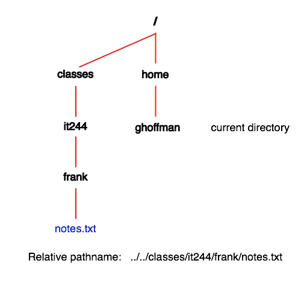

IT 244: Introduction to Linux/Unix
Class 8
Today's Topics
Tips and Examples
Review
New Material
Reading Assignment
The reading assignment for this week is chapter 3 of Sobell, The Utilities.
You will find a list of all reading assignments here.
There is a link to this page on the class web page.
Homework 4
I have posted Homework 4 here.
As usual, it will be due next Sunday at 11:59 PM.
Tips and Examples
Be Sure You Know Where You Are
- Whenever you are working at the command line ...
- you always have a current directory
- It is important that you always know your current directory
- If you think you are in one directory ...
- but you really are in another ...
- you can get into trouble
- Every semester I get at least one email from a student ...
- saying some file has disappeared
- Linux will never delete a file ...
- unless you tell it to
- The file is always somewhere ...
- but it may not be where you think it is
- Often the file is in their home directory
- When you think a file has disappeared ...
- look for it in other directories
- Another problem can arise if you are in the wrong directory
- If you try to save a file ...
- and get error message that you don't have permission ...
- it means you are in the wrong directory
- The owner of a directory decides who can do what ...
- in that directory
- If you are in a directory where you do not have write permission ...
- you won't be able to create or change anything
- A text editor like
nano will open a file ...
- whatever directory you are in
- But you won't be able to save it ...
- unless you have write permission in that directory
Review
The Hierarchical Filesystem
- Unix uses a hierarchical filesystem
- This means there is one directory at the top ...
- called the
root directory
- The root directory is indicated by a simple slash character, /
- All other directories are contained within the root directory ...
- or one of its many subdirectories
- This structure is called a tree because it looks like a tree turned upside down
- A hierarchical filesystem also resembles a family tree
- So we often use terms that describe family members ...
- when talking about directories
- The directory up one level from your current directory is called the
parent directory
- All directories above the current directory are called
ancestors
- All directories inside the current directories are called
child directories
- All directories below the current directory can be called
descendants
- All directories and files within the same parent directory are called
siblings

Unix Files and Directories
- Files
are linear arrangements of data ...
- on a storage device
- There are several types of files
- Program files
- Text files
- Data files
- Configuration files
- Directories are simply containers that hold files
- Unix tends to treat everything is sees as a file
- Unix even considers devices, such as printers, as files
- Directories are files too, as far as Unix is concerned
- You cannot run
cat, more or less on a directory ...
- or on a device
- The information that directory files contain ...
- can only be accessed by system programs and system calls
Filenames
- When you ask Unix for a file you must give it two pieces of information
- The name of the file
- The location of the file in the hierarchical file system
- Every file has a filename
- The maximum number of characters permitted in a filename ...
- varies from one Unix to another
- Most Unix flavors allow file names of up to 255 characters
- It is best to keep filenames short
- This makes typing and remembering them easier
- Never use a space in a file or directory name
- This is a bad idea
- Use an underscore, _ , instead of a space in file names
- To avoid problems, only use the following characters in file names
- Uppercase letters (A-Z)
- Lowercase letters (a-z)
- Digits (0-9)
- Underscore _
- Dash -
- Period .
- You cannot have two files with the same name ...
- in the same directory
Case Sensitivity
- Unix is case sensitive
- This means that "Foo", "foo" and "FOO" ...
- are three different things ...
- as far as Unix is concerned
- Unix utility and program names are always lowercase
- Some operating systems do not distinguish ...
- between UPPERCASE and lowercase characters
- Windows is such a system
- Make life easy for yourself
- Use only lowercase characters in Unix filenames
Filename Extensions
- Extensions are strings of characters ...
- that appear at the end of the filename ...
- after a period, .
- Extensions are not recognized by the Unix filesystem
- As far as Unix is concerned ...
- they are just legal characters ...
- that are part of the filename
- Some Unix programs expect their files ...
- to have certain extensions
- For example, the C compiler,
gcc ...
- expects the filenames of source code files to end in .c
- The Java compiler,
javac ...
- expects Java source files to have .java ...
- at the end of the filename
- The extensions are required by these program ...
- not by Unix
Current Directory
- The way a Unix command works ...
- depends, somewhat, on your environment
- One of the most important parts of your environment ...
- is your current directory
- The
pwd (print working directory) command ...
- will always tell you your current directory
Your Home Directory
- Whenever you log in to a Unix host ...
- you will always find yourself in your
home directory
- This a directory that belongs to your Unix account only
- You have full control of everything inside this directory
- If you use
cd with no arguments ...
- it will take you to your home directory
$ cd
$ pwd
/home/tsoro
- Your home directory contains a number of hidden files ...
- which customize your environment ...
- like .plan
- On most Unix systems, home directories are found inside the /home directory
- On a Mac, home directories appear inside /Users
- The name of your home directory ...
- is the same as your Unix username
Navigating the Hierarchical File Systems
- Any file or directory in the filesystem ...
- will be one of four positions ...
- relative to your current directory
- It can be inside your current directory
- It can be below your current directory
- It can be above your current directory
- It can be off to the side of your current directory
- In this last case, you must go up ...
- before you can go down to reach this file
New Material
Hidden Filenames
- A file whose filename begins with a period, . ...
- is a "hidden" or "invisible" file
ls does not display these files unless you use the -a option- Two special hidden files . and .. appear in every directory
$ ls -a
. .. hw3 work
- We'll discuss them shortly
Startup Files
- The files .login and .bash_profile are
startup files
- Startup file contain Unix commands that are run ...
- just before you get the first shell prompt
- These customize your Unix environment
- They only work when placed inside your home directory
- They can set variables which can help you with your work
- We'll talk more about this in a future class
The . and . . Directory Entries
Pathnames
- Every file has a pathname ...
- which is used to access the file
- A pathname has two components
- A path to reach the file
- The name of the file
- A pathname is like an address on a letter ...
- a name ...
- and directions to get there
- The name of the file is always at the end of a pathname
- What comes before the filename ...
- is the path to the directory that holds the file
- A path is the list of directories you must go through ...
- to get to the file
- When you see a slash, / , to the right of a name
- it means the name refers to a directory
- When a path consists of several directories ...
- a slash, / , separates the directory names
- There are two types of pathnames
Absolute Pathnames
- The directory at the top of the filesystem ...
- is called the root directory
- The root directory is represented by a single slash, /
- It can stand alone ...
- or appear as the first character before a directory name
- An absolute path is a list of directories ...
- starting with the root directory ...
- and ending with the directory that holds the file
- When you add the filename to the end of an absolute path ...
- you have an absolute pathname
- The absolute pathname of my startup file, .bash_profile ...
- in my home directory ...
- is /home/tsoro/.bash_profile
- This means that my home directory, tsoro ...
- is under the directory named home ...
- which is under the root directory, /
- The advantage of an absolute pathname ...
- is that it can be used from any part of the filesystem
- It does not depend on where you are ...
- at a given moment
- The disadvantage is that absolute pathnames tend to be long
- It is easy to make a mistake when typing an absolute pathname
- An absolute pathname always begins with either a slash, / ...
- or a tilde, ~
Tilde, ~, in Pathnames
Relative Pathnames
- Absolute pathnames are useful ...
- because you can use them anywhere
- But they are long and easy to mistype
- It is easier to use relative pathnames
- In a relative pathname ...
- the path starts from your current directory
- In an absolute pathname ...
- the path starts from the root directory, /
- The only difference between an absolute ...
- and a relative path ...
- is where they start
- An address on a letter is like an absolute pathname
- If you address a letter to me at
Glenn Hoffman
40 Central Street
Somerville, Massachusetts 02143
USA
- you can mail it to me anywhere in the world ...
- and it will get to me
- If someone asked me the directions to the men's room ...
- from the Web Lab ...
- I would say
Go out the door
Turn left
Take you first door on the right
- These directions only work from the Web Lab
- This is like a relative path
- While all absolute pathnames start with a slash, /,
or a tilde, ~
- relative pathnames never do
- The absence of a slash, / , or a tilde, ~
- at the start of a pathname ...
- means it is a relative pathname
- As far as Unix is concerned it makes no difference ...
- whether you use and absolute or relative pathname
- Relative pathnames are more convenient ...
- and are most often used
- There are four types of relative pathnames
- When the file is in your current directory
- When the file is in a subdirectory of your current directory
- When the file is in a directory that is above your current directory
- When the file is in a directory that is neither above or below of your current directory
Relative Pathnames in Your Current Directory
Relative Pathnames in a Subdirectory
Relative Pathnames above the Current Directory
- Every directory has a . . entry
- that refers to the directory immediately above it
- If I wanted to list the contents of the parent directory ...
- I would use
ls ..
- You can use many . . entries ...
- to refer to a directory several levels up
- Use one . .
- for each directory up the chain of directories in the path ...
- with a slash, /, between each . .
Relative Pathnames Neither above Nor below the Current Directory
- What if the file is neither above nor below?
- Here you have to go up to a common ancestor directory ...
- and then go down to the directory that holds the file
- The path starts with one or more . . ...
- and keeps going up ...
- until you get to a directory that is an ancestor ...
- of both your current directory ...
- and the file you are trying to reach
- Once you get to the common ancestor ...
- you go down to the directory that holds the file

Standard Directories
- In the early days of Linux ...
- each distribution stored its important files ...
- in different directories
- This made it hard to document programs
- It also made things hard for developers ...
- working with different flavors of Linux
- Fortunately, reason has since prevailed
- We now have something called the FHS
- It stands for Linux Filesystem Hierarchy Standard
- It has been adopted by most major Linux distributions
- The standard does not say ...
- where to find different kinds of files
- Instead it says that if you have a certain directory ...
- what files you can find in that directory
- You can see a listing for the FHS on page 96 ...
- of the current version of Sobell ...
- or page 91 of the previous edition
- Most Linux distributions do not use all these directories
- But when they do, they use them for the type of files ...
- specified by the standard
Your Home Directory versus /home
- Most Unix accounts have a home directory ...
- though not all
- One of the Ubuntu commands that creates an account ...
- has an option to not create a home directory ...
- for that account
- On most Unix and Linux systems ...
- all home directories are contained in the directory /home ...
- which is directly under the root directory ...
- written as /
- On the Mac, home directories are contained in /Users ...
- also directly under the root directory
- Do not confuse /home with your home directory
The Two Uses of /
- / is used in two different ways ...
- when writing pathnames
- When / appears at the beginning of a pathname ...
- it refers to the root directory ...
- the directory at the top of the filesystem
- The root directory is the only directory ...
- that is not contained in another directory
- Here is an example of this use of /
ls /home
- This is the absolute address of home ...
- which holds the home directories of all users
- When the / is not at the beginning of a pathname ...
- it is used a separator ...
- a character to mark the boundary between a directory ...
- and the name of a file ...
- or another directory
- Here is an example of this use of /
ls it244/hw
- This is the relative pathname of the hw directory ...
- inside the it244 directory
- A pathname can use the / in both ways
ls /home/tsoro
- Here the first / means the root ...
- while the second is used to separate the home directory ...
- from my home directory, tsoro
The Two Special Uses of .
Attendance
Class Quiz